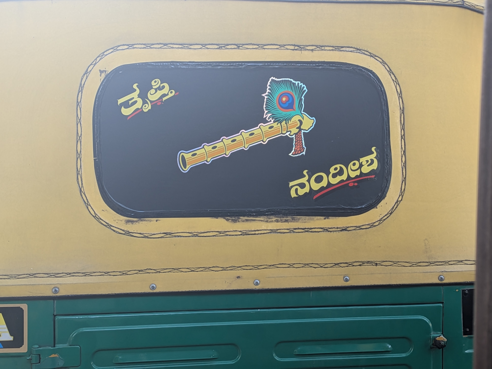
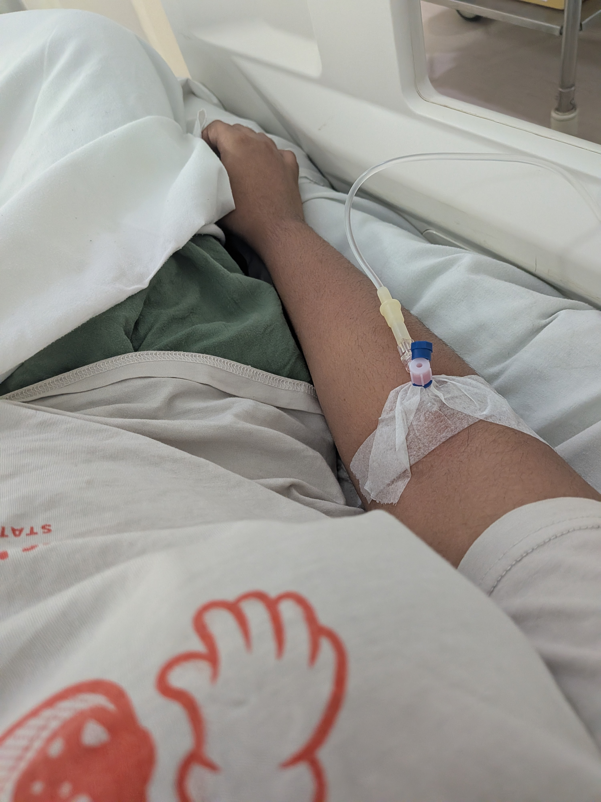
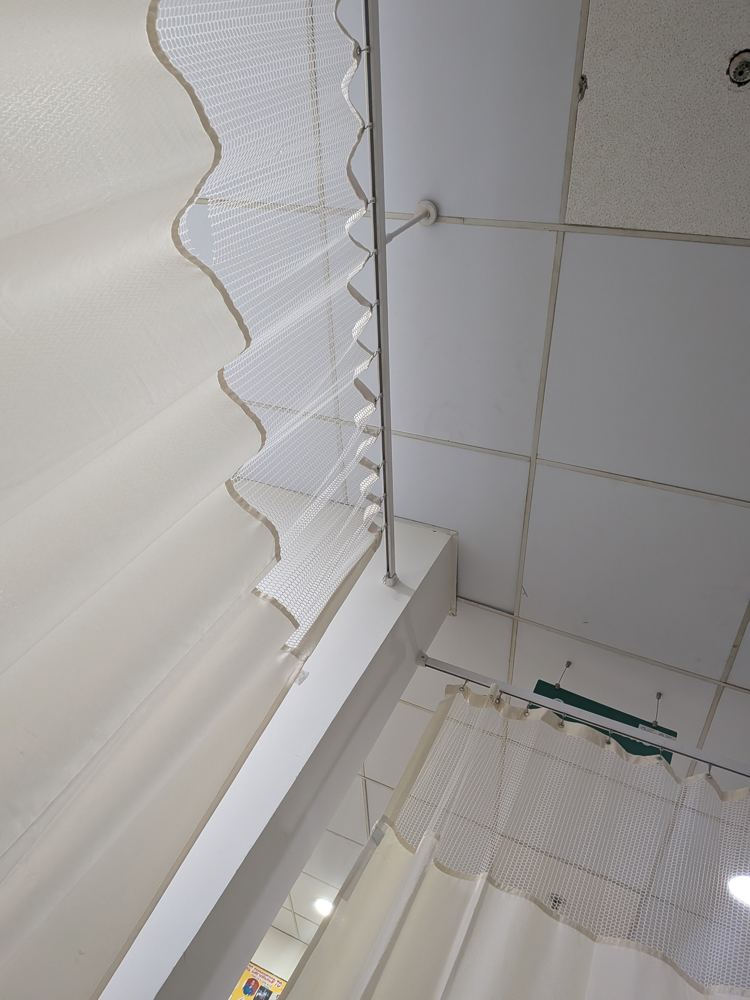
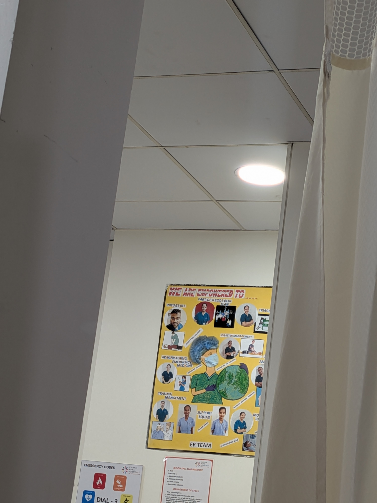
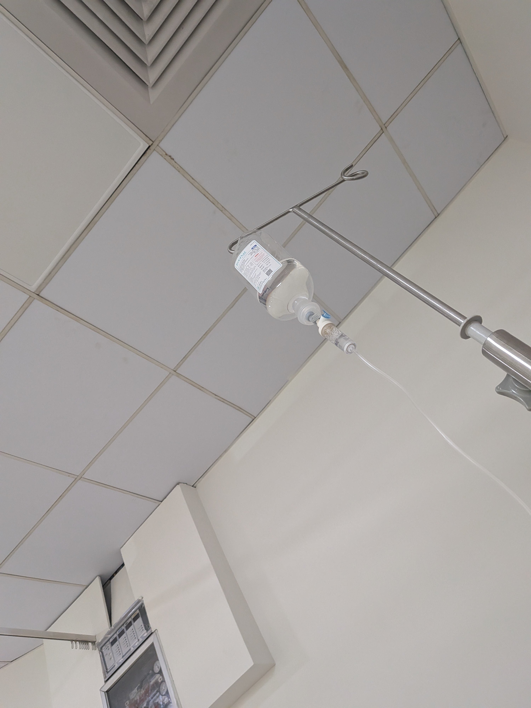
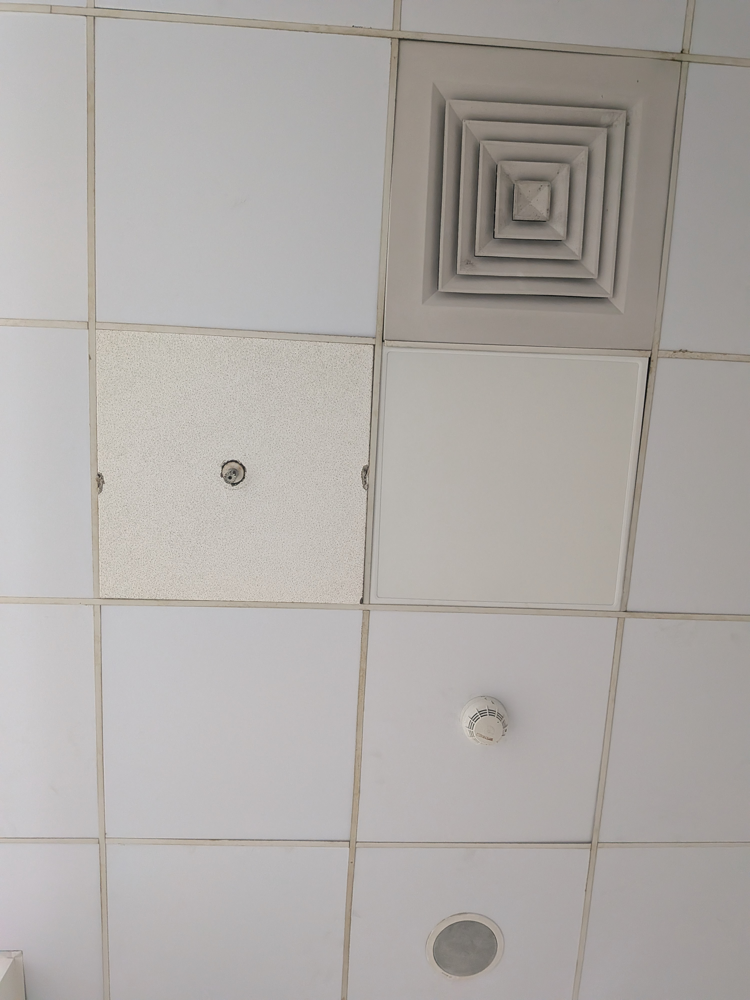

Yesterday I ended up at the Emergency room yet again for gastroenteritis. It's probably my second or third time this year and 6 times in the last two years.
In the words of atharva "it's like a quarterly visit"
It was pretty bad, I barfed a lot and then my throat kept seizing up but nothing was coming out. I sat in pain for sometime hoping it would subside but it didn't. I got an auto and we were stuck in traffic in the heat. I kept thinking about how the vomit that didn't come out was now cooking in the heat lol. And saw this autobackster while riding there. It says "Trupti" and "Nandish"

I'm in the hospital ~
They had to stab me thrice to get the vein because I was dehydrated and the veins were super thin.

They asked me general questions - age, have you been here before, any allergies
The ER doctor was very pretty and wearing a mask. The nurse was the same as last time. The bed was nice. The pain killer was doing its thing. As I laid down, I started getting real cold but the blanket didn't go all the way. It covered waist down but not my feet. I'm so confused why it's made this way. I went in and out of sleep, hearing atharva in the distance telling someone on call what's happening and asking my doctor for updates.
~ some more wait ~ Oh the curtains tear is so pretty

There are charts here of the ER people, that is so cute.

I associate it with school nursery so much that I didn't realise how cute and useful it is to know. This place isn't a third space people are in and out of, there are people that come here everyday. I heard the two nurses cackling away while the doctor was out. In my haze, it was lovely to hear people gossiping and laughing (silently still). Lively. I loved hearing it. I wasn't alone.
I was in pain still.
They decided to give me some iv too because I'd puked up everything, even water. That was gonna take sometime.

Then I heard the nurse ask the doctor - do you know how to open this document in word and add a title? And she's like sure. They try to figure it out and I was very tempted to get up and help them out but I didn't. And whilst doing all this the doctor told the nurse "why would they make you do this? It's not part of your job" the nurse said "they said - you don't do anything all day, you should be able to figure these things out" girl, ER nurses are one of the busiest people ever, Wtf. I was so pissed. The nurse was very nice and I was very invested. After they finished the task, the nurse said thank you sooo much (very long sooooo) doctor. Cute.
Then the male nurse came to check on me, asked me if I was still in pain. I was. They gave me another painkiller. Very slowly injected through the iv stab. "Can I go home after this?" And suddenly, my vision starts going blurry and my heart was beating really fast and started hurting. Wtf. I had to sit up and they plugged a heart monitor. It was 134??! Gworl, am I gonna die? He asked me "do you have any allergies?" No. "Have you taken buscopan before?" Yes. Ok then we'll just monitor. It should go down. Dhruva was standing and yapping "why aren't you eating properly?" And holding a mock hand gun to my head. I kept trying to turn around and getting a look at the heart monitor. It was going down but very very slowly and he went "stop looking at it, it will go down" and some more eeping.
And we were done. Got the meds, paid bills. Here's a picture of my view most of the time.

I will be changing some things from now on to not let this happen again: No matter how bad my body dysmorphia is, 3 meals everyday No eating back to back outside food Taking acidity seriously